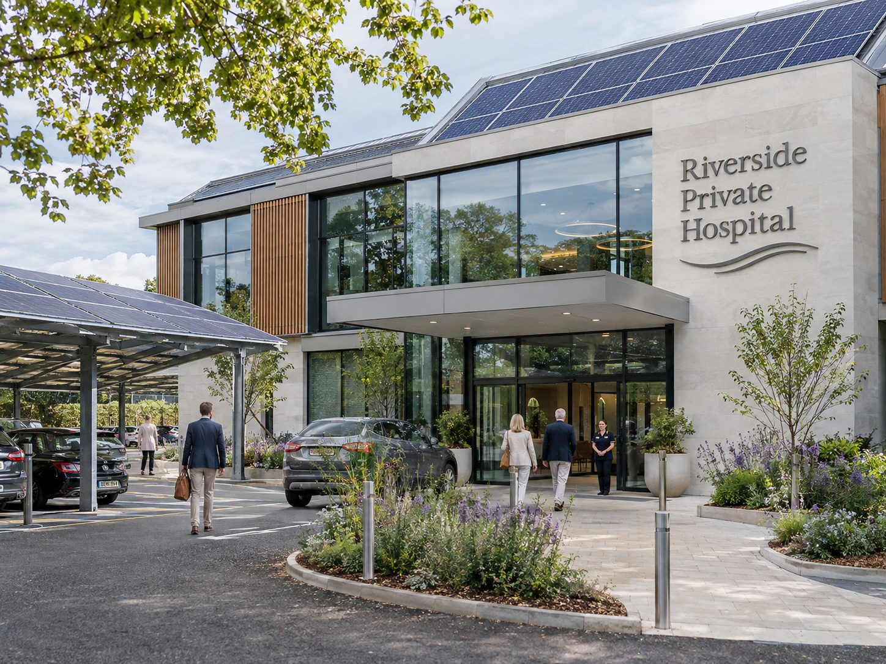

Solar suits hospitals because demand never stops, so a well-sized system's output is almost all used on site, saving the full unit price. Clinics and admin buildings closed at weekends use less of it. The way to size a system is to measure your own share used on site from half-hourly data, then model the roof, car parks and land in the solar calculator.
Why it suits healthcare
- Constant demand. Wards, theatres, imaging, sterile services and ventilation run every day of the year, weekends included.
- Space. Large flat roofs, surface and multi-storey car parks and land on the estate can all take panels.
- Price certainty. Every kWh generated and used on site is one not bought at volatile grid prices.
- Carbon. Grid electricity is part of the NHS Carbon Footprint, so solar used on site counts directly towards the 2040 target.5
The number that matters: share used on site
Solar you use yourself saves your full unit price. Solar you export earns a few pence. The solar calculator values export at 5p/kWh, so at a 25p unit price a kWh used is worth five times a kWh exported. On a 24/7 hospital the share used is often 90% or more, until the system gets large enough to cover the site's whole daytime demand on a sunny Sunday. On a health centre or admin building closed at weekends it is often 55 to 80%.
Rather than guess, measure it. Load the site's half-hourly data into the analyser, open its Solar tab and press Size solar for this site. The calculator opens with your share used at each system size, so the payback is based on your own profile. See sizing solar from half-hourly data.
Where it goes on a hospital site

- Roofs. Hospital roofs carry plant, flues, access routes and sometimes helipads, so the usable share can be lower than on a warehouse. Structural checks are needed on older buildings.
- Car park canopies. More expensive per kWp because of the steelwork, but they use space that is otherwise only parking, give shade and shelter, and sit well with EV charging. See what solar costs.
- Ground mounts. The cheapest per kWp where the estate has land, often with a private wire to the main site.
- Helipads. Glint and glare from panels near a helicopter landing site needs assessing, and will usually be raised at planning stage.
Grid connection and resilience
Most hospital systems need approval from the network operator under the G99 process before they connect, and the operator may limit how much you can export. On a 24/7 site, export is often small anyway. Solar on its own does not keep a hospital running in a power cut: grid-connected systems switch off when the grid fails unless they are designed with batteries and controls to work alongside standby generators. See planning, grid connection and other hurdles.
Paying for it
Great British Energy has become the main source of new public money for NHS solar: £100 million announced in March 2025 for 132 projects at 78 trusts,1 162 NHS sites completed by May 2026 with £25 million more for up to 40 sites,2 and a scheme worth up to £255 million across schools, NHS and military sites.3 In Scotland, renewable power purchase agreements are a core part of NHS Scotland's strategy.4 Power purchase agreements, where a funder owns the system and you buy its electricity, avoid the need for capital altogether. See paying for solar and funding routes.
Sources
Checked 18 November 2026.
- NHS England: £100 million from Great British Energy for NHS trusts to install solar panels and battery storage (21 March 2025)
- Great British Energy: first anniversary announcement (15 May 2026)
- Portsmouth Hospitals University NHS Trust: extra solar panels funded by Great British Energy (27 October 2025)
- Scottish Government: NHS Scotland climate emergency and sustainability annual report 2025
- NHS England: Delivering a net zero NHS
Questions people ask
How much of its solar does a hospital use?
A 24/7 hospital often uses 90% or more of a well-sized system's output. Clinics and admin buildings closed at weekends often use 55 to 80%. Measure your own figure from half-hourly data in the analyser.
Will solar keep the hospital running in a power cut?
Not on its own. Grid-connected systems switch off when the grid fails. Backup needs batteries and controls designed to work with the site's standby generators.
How long does solar last, and what upkeep does it need?
The solar calculator models 25 years, but a well-kept system generates for longer. Panels usually carry 25 to 30-year performance warranties and lose around 0.4% of output a year after the first. Upkeep is light: an annual inspection, occasional cleaning and output monitoring, with one inverter replacement during the system's life. On a hospital, add the inspection to the planned maintenance schedule and the array to the electrical safety records.
Is there funding for solar on NHS sites?
Great British Energy has funded solar at hundreds of NHS sites since 2025, with a further £25 million announced in May 2026 for up to 40 more. Power purchase agreements avoid capital altogether.